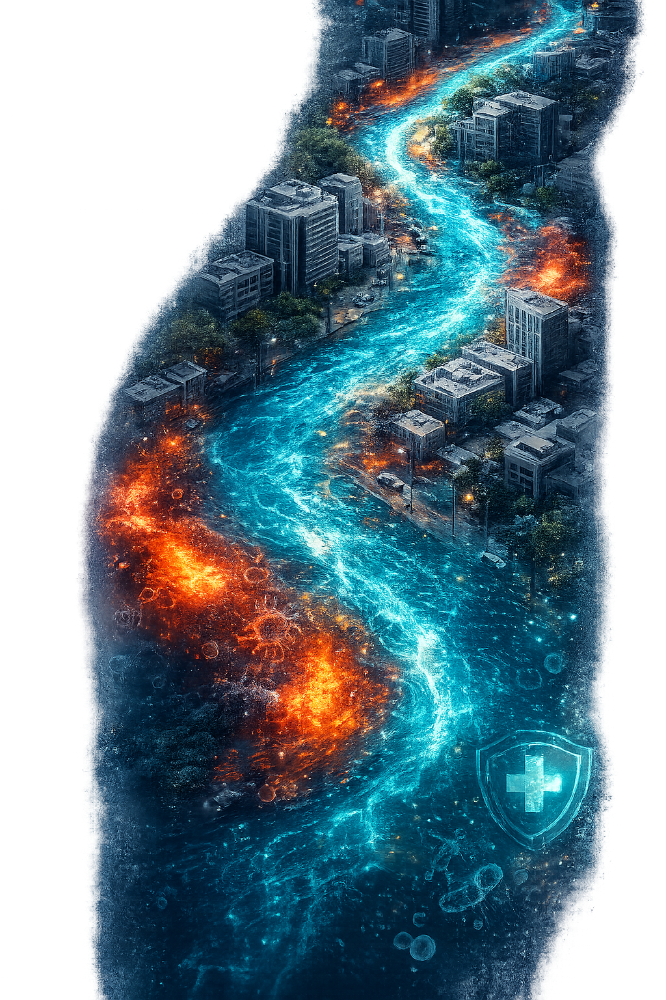

Inundation
Depth (m)
- >3.0
- 2.0
- 1.0
- 0.5
- 0.2
- <0.1
Featured Research
Urban Flood & Health Risk
Delhi, 2023
~63%Area under High to Very High Flood Hazard
>500 MPN/100 mlE. coli above safe bathing threshold across the corridor
0.79 – 0.96Annual infection probability (children highest)
22 kmWazirabad–Okhla Corridor, Yamuna River